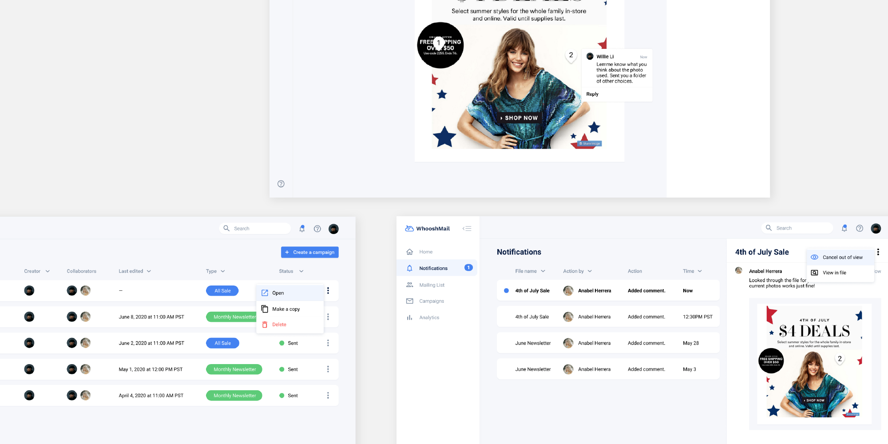
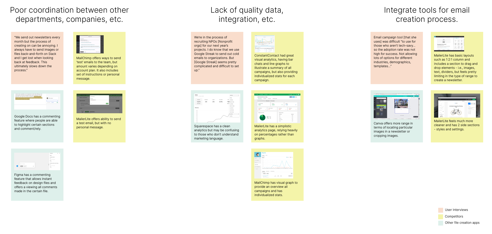
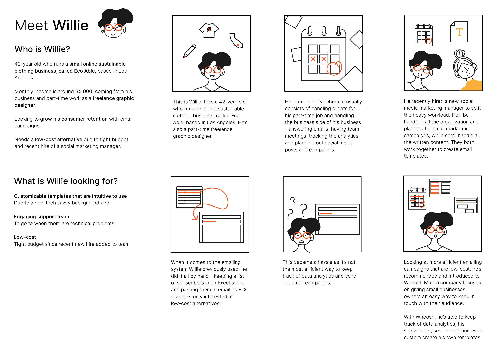
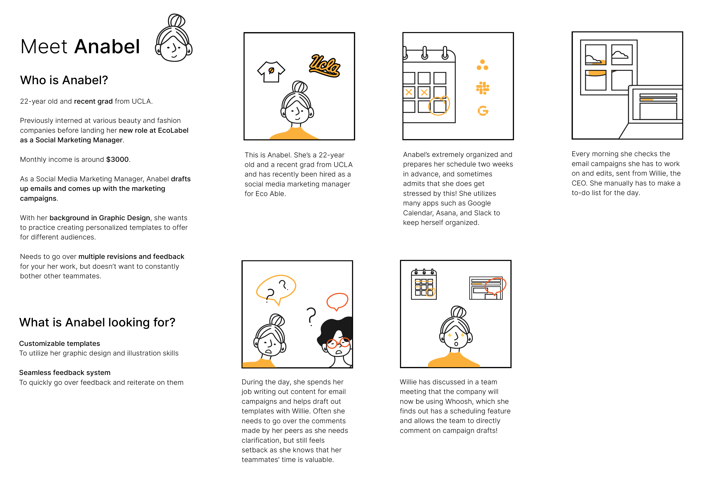
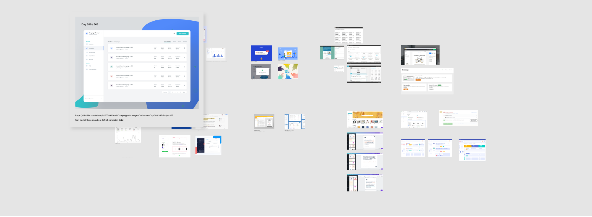
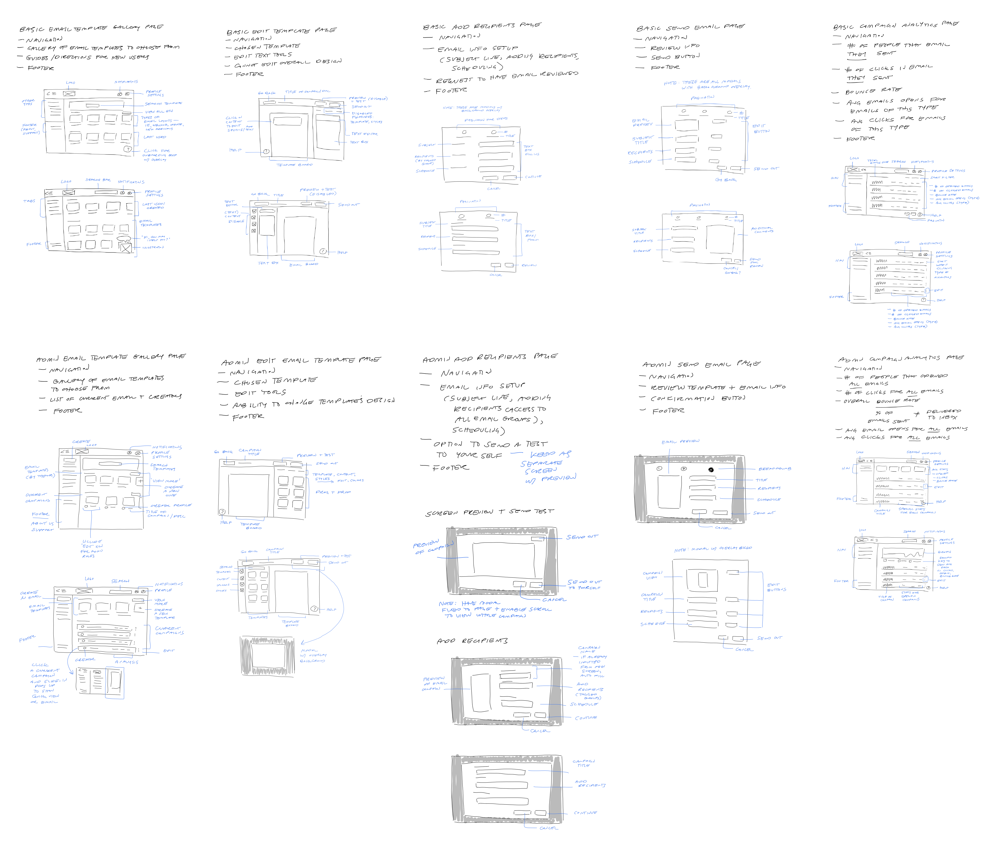
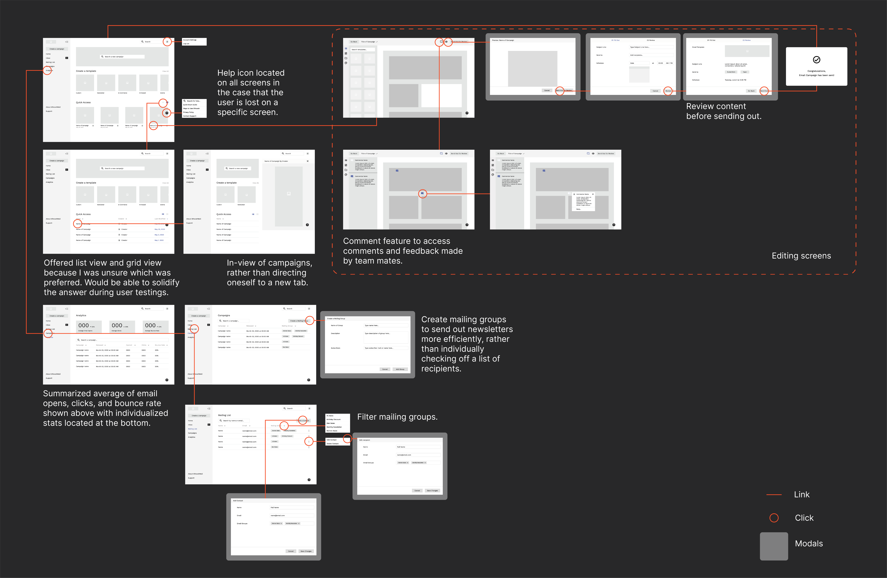
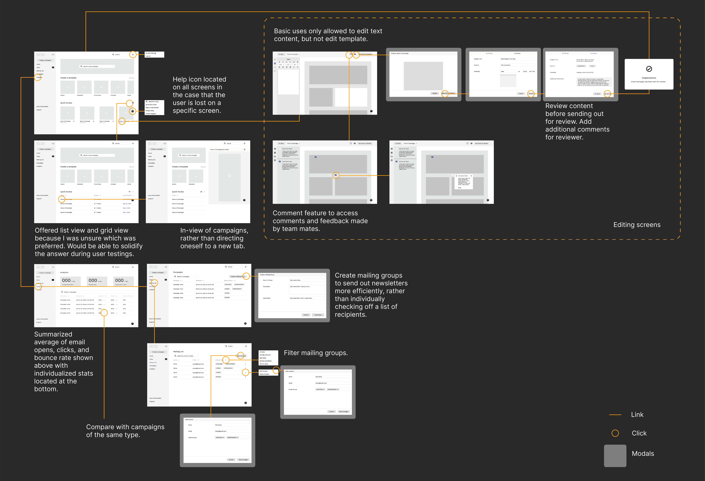
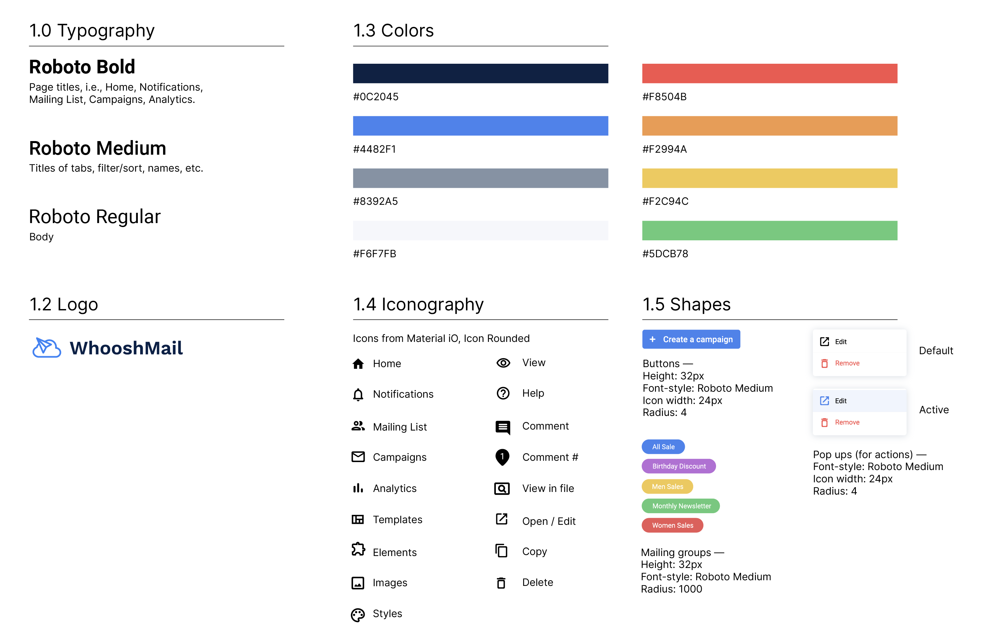

Case Study — 2020
WhooshMail

During my apprenticeship with Treehouse, I was tasked to develop a web app to improve the experience of both Admin and Basic user roles with their audience of small business owners and entrepreneurs.
I approached this redesign by researching the product space and its users, identifying the biggest areas of improvement I could solve through the design, and then prototyping and testing out my solutions.
I approached this redesign by researching the product space and its users, identifying the biggest areas of improvement I could solve through the design, and then prototyping and testing out my solutions.
Role
Product DesignerUX Researcher
Tools
Adobe DrawAdobe Illustrator
Figma
Timeline
1 month, Jun 2020
Problem
How might we create an emailing system that is intuitive to use, especially when coordinating work with a team?
Small business owners want an easy way to keep in touch with their customers, but most don't define themselves as tech-savvy. This becomes a problem when it comes to drafting out campaigns yet having difficulty understanding how creation tools work or understanding marketing language such as bounce rate and APO.
Apps such as MailChimp, MailerLite, and Canva solve these problems but fail to resolve the problem occurring within the marketing team, such as poor communication between content writers, designers, and product managers.
How might we solve the problem of poor communication, but also making an intuitive system to use for non-tech-savvy users?
Apps such as MailChimp, MailerLite, and Canva solve these problems but fail to resolve the problem occurring within the marketing team, such as poor communication between content writers, designers, and product managers.
How might we solve the problem of poor communication, but also making an intuitive system to use for non-tech-savvy users?
Research
01 — Taking upon more research on current pain points that marketing teams are facing.
02 — Noting the flows and features of current campaign systems.
03 — Summarizing and gaining key takeaways from my research and analyzing them through user personas and graphs, comparing competitors.
02 — Noting the flows and features of current campaign systems.
03 — Summarizing and gaining key takeaways from my research and analyzing them through user personas and graphs, comparing competitors.
I first researched current pain points that marketing teams were facing and then looked at other content creation competitors to view how they solved these problems.
The 3 top email marketing system competitors that I dove into were:
01 — Constant Contact
02 — MailChimp
03 — MailerLite
I also looked toward other content creation apps such as Canva, Figma, Squarespace, and Google Drive (specifically Documents).
01 — Constant Contact
02 — MailChimp
03 — MailerLite
I also looked toward other content creation apps such as Canva, Figma, Squarespace, and Google Drive (specifically Documents).
I created an affinity map of all my findings from interviews and research from competitors and other file creation platforms.
I focused on 3 themes, taken from my online research on common challenges faced with current marketing campaigns.
01 — Poor coordination between other departments, channels, etc.
02 — Lack of quality data, integration, etc.
03 — Inadequate tools for email creation process
01 — Poor coordination between other departments, channels, etc.
02 — Lack of quality data, integration, etc.
03 — Inadequate tools for email creation process

Synthesize
To synthesize my findings, I developed 2 user personas and storyboards.
By creating a set of made-up characters, this helped represent the key customer types (admin and basic roles) and how they might respond to different situations.
For each storyboard, I primarily noted the pain points that potential customers might have with their current way of emailing and the solution that WhooshMail would offer.
For each storyboard, I primarily noted the pain points that potential customers might have with their current way of emailing and the solution that WhooshMail would offer.
Willie is representative of an Admin user.

Anabel is representative of a Basic user.

Goals
Prior to sketching alternative layouts and finding inspiration for both admin and basic screens, I made key steps and screens to incorporate in the sketches.
I found 4 main areas to target on the app, along with features to include in each area.
01 — An overview of the campaigns.
02 — A page to showcase all the templates to choose from.
03 —An edit template page, showcasing all the elements and components needed to create an email campaign, following a form including the subject title of the email, added recipients, and when to schedule out.
04 — An analytics page to include all the stats on all the sent campaigns, individualized and summarized.
01 — An overview of the campaigns.
02 — A page to showcase all the templates to choose from.
03 —An edit template page, showcasing all the elements and components needed to create an email campaign, following a form including the subject title of the email, added recipients, and when to schedule out.
04 — An analytics page to include all the stats on all the sent campaigns, individualized and summarized.
Ideation
After noting the main areas I wanted to focus on, I made an inspoboard to note layout and current features.
When finding inspiration for my app, I looked towards Dribble, Behance, and my findings from the competitor analysis. For each screenshot, I noted the source and additional comments on layout, color, font choice and sizing, spacing, features, etc.
When taking in mind users navigating about the app, I found that Canva has a help icon to ensure usability and answering any common questions asked by users. I decided to incorporate this in my ideas, adding it to the onboarding experience. After creating an inspoboard, I then dived into churning out sketches for each screen.
When taking in mind users navigating about the app, I found that Canva has a help icon to ensure usability and answering any common questions asked by users. I decided to incorporate this in my ideas, adding it to the onboarding experience. After creating an inspoboard, I then dived into churning out sketches for each screen.

Afterwards, I drafted alternative user flows and screen layouts.
I wanted to create a similar and intuitive experience for both admin and basic and did this by merging both designs and disabling or leaving out some features
I.e., the email template gallery page for admin contains current email campaigns and creators whereas for basic, current email campaigns is withdrawn. I also incorporated a ‘help’ feature for both admin and basic users to click on to go over an onboarding experience or to view FAQs.While sketching out alternative layouts, moving around components, I had sporadic idea moments in which I forgot to include elements such as pagination, breadcrumbs, and taking in mind cancel/go back buttons for modals.

Scratch work done on Adobe Draw.
When it came to the wireframes, I ran into different idea sprints and looked more finely into the details of components.
Refine the details of components.
I asked questions like: What type of editors should be within a text editor? What tabs should be available for both admin and basic screens in the navbar? I referred back to my inspoboard and screenshots obtained from mailChimp and mailerLite to see how they outlined the details of components.I also took note edge cases and user flow to create a semi-full user flow.
Featuring the major screens such as how date would be added when scheduling out an email campaign, how to show disabled tabs so basic users can’t access edits (keeping opacity to 50 or 30%), and adding a final congrats message once email has been sent out, either for review or to subscribers.
Admin Wireframes.

Basic Wireframes.
User Testing
What went well?
I used a Likert scale to statistically allow users to express how much they found the app to be intuitive to use, depending on the flow they used — basic or admin. The average rating for the admin and basic flow was 9.1.
01 — Potential users found the process easy to navigate, despite the basic users having no background in email campaign systems.
02 — Some found the commenting feature as a solution to the problem of solving poor communication, while others feel that it was a partial solution.
01 — Potential users found the process easy to navigate, despite the basic users having no background in email campaign systems.
02 — Some found the commenting feature as a solution to the problem of solving poor communication, while others feel that it was a partial solution.
What can be improved?
01 — Emphasize the comment feature as a differentiating feature compared to other current email campaign systems.
02 — Considering whether an inbox is needed and notifications tab could be in place.
03 — Make it more clear to schedule a campaign versus sending out to review.
04 — Include different time zones to clarify what type of demographic is going to be sent the email.
05 — Adding version control to see past changes and who made those changes.
02 — Considering whether an inbox is needed and notifications tab could be in place.
03 — Make it more clear to schedule a campaign versus sending out to review.
04 — Include different time zones to clarify what type of demographic is going to be sent the email.
05 — Adding version control to see past changes and who made those changes.
Styles
In order to keep the design consistent, I developed a style guide based on the collection of inspiration.
The guide loosely defined our typography, colors, and shapes used.
02 — To associate certain mailing groups and other components, I used high saturated tones to convey the simple and friendly brand of the company.
For the colors,
01 — I mainly used cool colors and shades of blue as the base color to convey that WhooshMail was a professional and trustworthy brand.02 — To associate certain mailing groups and other components, I used high saturated tones to convey the simple and friendly brand of the company.
For the icons and shapes,
I kept them round, with no sharp edges to add onto the friendly and simple branding, as rounded corners are easier on the eyes.
Final Prototype
Home
Overview all your current campaigns and get access to notifications sent from your teammates.
Notifications
View your notifications from your teammates, and click ‘quick view’ to view the comments in a screenshot, rather than opening up the file.
Collaborate and communicate
Get quick feedback on specific areas from your team mates using the comment feature.
Mailing List
View all your mailing recipients on one page, and create mailing groups to soothe of process of sending out campaigns to particular audiences.
Analytics
View all the stats on your campaigns, in summary or on specific campaigns.
Easily create your campaign
Create your campaign in a 2 quick steps — choose your template and fill out the details (file name and collaborators)!
Edit directly on your file
Drag and drop elements and edit text directly on your file.
Prep to schedule out
Preview your campaign to make sure everything’s pixel perfect before sending out. Fill out quick information such as mailing groups, subject title, and scheduled time (for any time zone), and congrats on scheduling your campaign!
Learnings and Takeaways
This is my first project where I created a desktop app, and it definitely pushed me to think about my thought process from research to prototypes, especially diving into two different app views - Basic and Admin.
Looking forward, I would love to hear more stories from different types of marketers, as I was only able to talk to people in the program or peers, with most having basic to zero knowledge on email campaign systems. Having different types of marketers ranging from fashion, food, sports, education, etc. would unveil different user flows to take in mind.
Looking forward, I would love to hear more stories from different types of marketers, as I was only able to talk to people in the program or peers, with most having basic to zero knowledge on email campaign systems. Having different types of marketers ranging from fashion, food, sports, education, etc. would unveil different user flows to take in mind.
Next steps
Feature to compare ‘x’ campaigns.
Further research and test on ways to apply different layouts and features to view analytics such as comparing stats between two campaigns or see stats on currently running campaigns and archiving those that are not active.View stats visually from singular campaigns.
Rather than having graphs available to a summary of all campaign, having graphs available for individual campaigns would help marketers get an in-depth understanding of how their campaign is doing gradually, in days to weeks.Utilize different user testing methods or tools.
I recently found out about Userberry, a plugin that creates a graphical representation of the testers’ journey while they're interacting with the prototype as well as offering a heatmap. In my next project, will definitely consider using it as an unmoderated test tool.